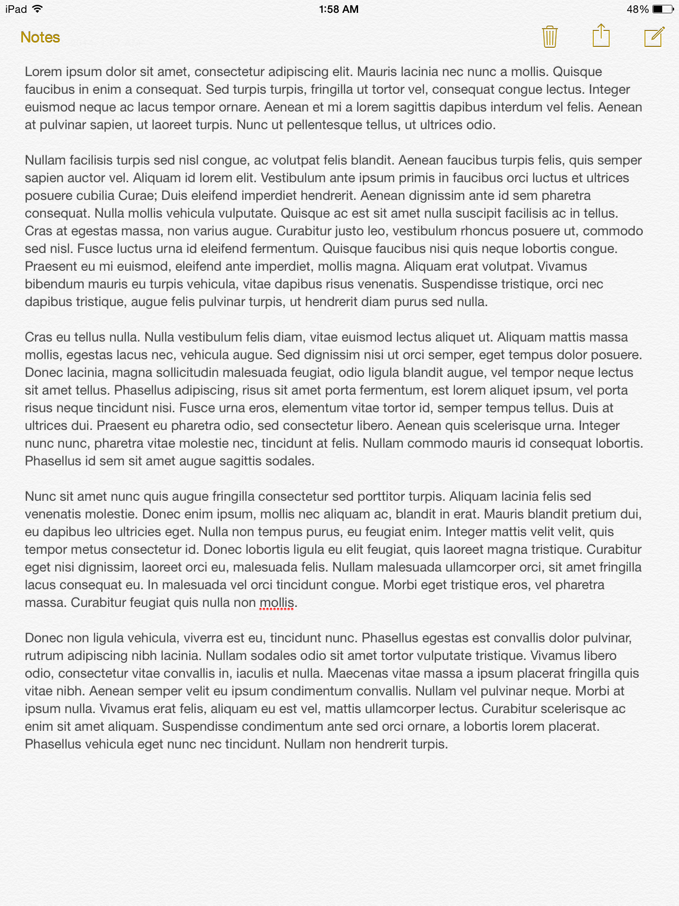
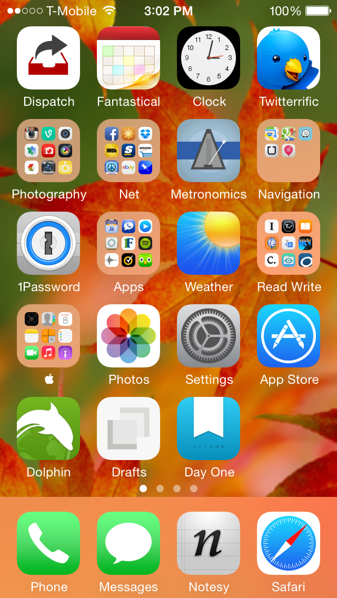

Here Not Be Dragons
We have some really big images below that need to be tamed. We want the images to be responsive, but not get bigger than their "natural" size. jQuery can help!


This dude will be ignored. He looks pretty pleased about it.